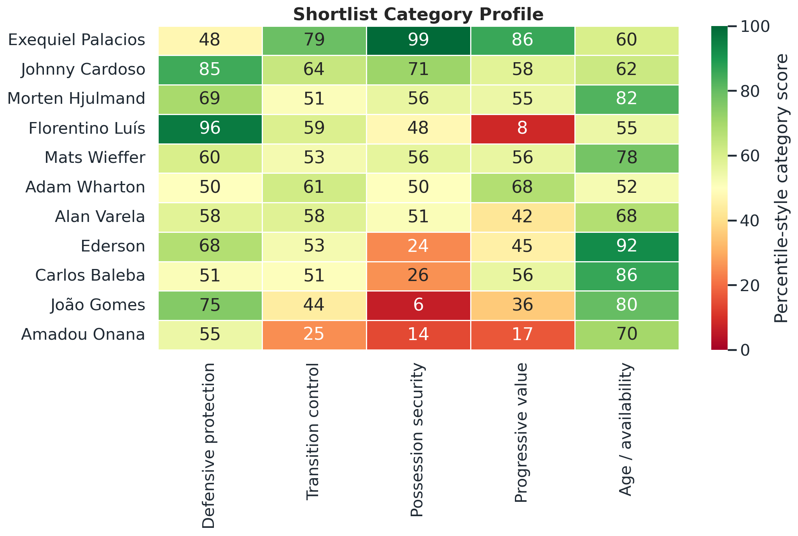
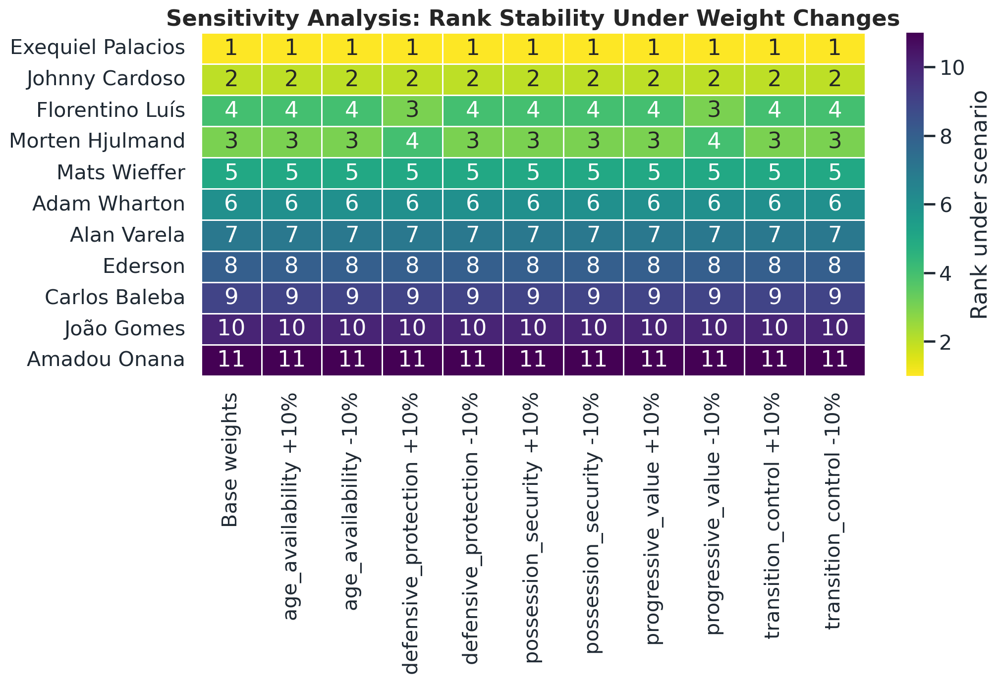

Executive View
This is a recruitment screen, not a signing verdict. It translates United's need for control into a repeatable public-data framework.
| Reference | Age | Defence | Transition | Security | Progression |
|---|---|---|---|---|---|
| Manuel Ugarte | 25 | 84.17 | 57.14 | 72.14 | 15.00 |
| Casemiro | 34 | 63.33 | 12.86 | 15.00 | 25.00 |
How The Score Works
Each player receives five category scores. Those categories are weighted into a single Control Midfielder Score.
1. Ranked Shortlist
The published shortlist applies a light defensive-protection gate to remove pure control profiles with limited ball-winning evidence. The gate is intentionally low because the model is screening for complementary control midfielders, not only defensive destroyers.

How to read it
- The bar length is the final weighted score, not a direct scouting grade.
- Palacios rises because possession security and progression matter heavily in the brief.
- Cardoso's lower total still matters because his defensive floor is much stronger.
| # | Player | Club | League | Age | Score | Defence | Transition | Security | Progression | Age/Avail. |
|---|---|---|---|---|---|---|---|---|---|---|
| 1 | Exequiel Palacios | Bayer Leverkusen | Bundesliga | 27 | 74.77 | 47.50 | 79.29 | 99.29 | 85.83 | 60.00 |
| 2 | Johnny Cardoso | Atletico Madrid | La Liga | 24 | 71.00 | 85.00 | 63.57 | 71.43 | 57.50 | 62.50 |
| 3 | Morten Hjulmand | Sporting CP | Primeira Liga | 26 | 59.82 | 69.17 | 51.07 | 55.71 | 55.00 | 82.50 |
| 4 | Florentino Luís | Burnley | Premier League | 26 | 59.54 | 95.83 | 59.29 | 47.86 | 8.33 | 55.00 |
| 5 | Mats Wieffer | Brighton & Hove Albion | Premier League | 26 | 57.57 | 60.00 | 52.86 | 56.43 | 55.83 | 77.50 |
| 6 | Adam Wharton | Crystal Palace | Premier League | 22 | 55.61 | 50.00 | 61.43 | 50.00 | 67.50 | 52.50 |
| 7 | Alan Varela | Porto | Primeira Liga | 24 | 54.32 | 57.50 | 57.86 | 51.43 | 42.50 | 67.50 |
| 8 | Ederson | Atalanta | Serie A | 26 | 50.91 | 67.50 | 52.86 | 24.29 | 45.00 | 92.50 |
| 9 | Carlos Baleba | Brighton & Hove Albion | Premier League | 22 | 47.17 | 51.25 | 50.71 | 25.71 | 55.83 | 86.25 |
| 10 | João Gomes | Wolverhampton Wanderers | Premier League | 25 | 44.55 | 75.00 | 44.29 | 6.43 | 35.83 | 80.00 |
| 11 | Amadou Onana | Aston Villa | Premier League | 24 | 32.32 | 55.00 | 25.00 | 14.29 | 16.67 | 70.00 |
2. Control Matrix
This chart shows the main football trade-off: can the player help United control possession without losing the defensive floor?

Scout and fan read
- Right side means safer possession: more secure receiving, passing, and turnover profile.
- Higher up means stronger defensive protection relative to the pool.
- Bigger bubbles add more progressive value: they help United move forward, not just recycle.
3. Category Heatmap
The heatmap explains why players with similar total scores can be very different midfielders.

What the colors mean
- Green means a strength relative to the screened public-data pool.
- Red does not automatically rule a player out; it tells the scout what to test on video.
- Florentino is a defensive specialist, while Palacios and Stiller are clearer control/pass profiles.
4. Casemiro and Ugarte References
United's current midfield references help explain the target brief: preserve the ball-winning base, but add more control and progression.

Why this matters
- Casemiro is the ageing reference point for defensive responsibility, not the statistical clone target.
- Ugarte already covers much of the defensive/security need.
- The next midfielder should complement that base by adding cleaner possession and progression.
5. Sensitivity and Practicality
A good screen should not collapse when reasonable category weights move.

What to look for
- Stable names are less dependent on one subjective weighting choice.
- Age, minutes, and market value are only practical context fields.
- Final decisions still need video, tactical role fit, medical, contract, and fee work.
Watchlist: Removed By Defensive Gate
These players remain analytically interesting, but they do not clear the light defensive-protection threshold used for the published shortlist.
| Player | Club | Score | Defence | Main Risk | Risk Score |
|---|---|---|---|---|---|
| Elliot Anderson | Nottingham Forest | 62.66 | 42.50 | defensive_protection | 42.50 |
| Angelo Stiller | Stuttgart | 57.68 | 8.33 | defensive_protection | 8.33 |
| Hugo Larsson | Eintracht Frankfurt | 55.29 | 38.75 | defensive_protection | 38.75 |
| Aleix Garcia | Bayer Leverkusen | 54.14 | 6.67 | defensive_protection | 6.67 |
| Samuele Ricci | AC Milan | 50.23 | 28.75 | defensive_protection | 28.75 |
| Bruno Guimarães | Newcastle United | 48.86 | 27.50 | defensive_protection | 27.50 |
| Youssouf Fofana | AC Milan | 39.15 | 36.25 | possession_security | 20.71 |
Limitations
The strongest version of this project is honest about what public data can and cannot prove.
What this does well
It turns an abstract United need, "more control", into measurable screening traits: defensive protection, transition control, possession security, progression, and age/availability.
repeatabletransparentportfolio-readyWhat it cannot do
It cannot replace club scouting. StatsBomb open data is limited to selected competitions, public aggregate stats are not proprietary club data, and public statsbombpy access should not be treated as 360 data access.